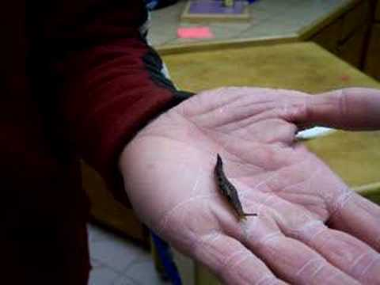
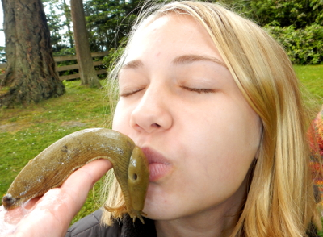
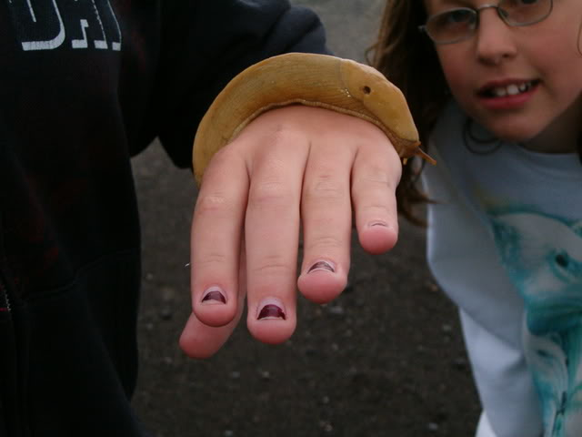
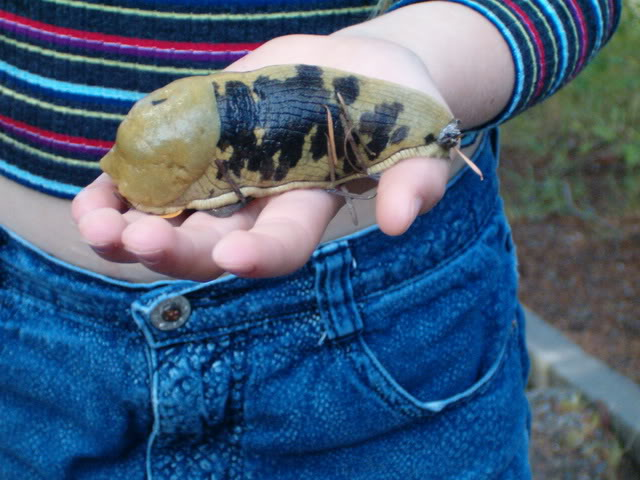
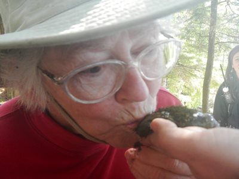

 We think of slugs as slimy gross things but actually they make wonderful pets. Slugs are easy to care for and they are good for older kids. Younger kids might accidentally squash the slug wanting to hold it, or they might forget to care for the slug.
This spotted creepy-crawly also known as Leopard Slug, Great Grey Slug, and scientifically as Limax Maximus can be found all over the United States and Europe. Although it is not native to the United States, it migrated to North America probably from the UK and now has spread all across the USA as well as across most of Europe. You can find them in woods, fields, and gardens under rocks or dead trees because they like damp, dark places to rest from the sun, and they are almost always near human habitation. Leopard Slugs are nocturnal although they do come out in the day when it is raining.
Slugs are basically snails without shells, and both are mollusks. All slugs and snails move by excreting a special mucus (slime trail) and pulling themselves along the slime with their one muscular foot. If you see a thin silvery trail across the ground or your porch you can know that a slug or snail was there, and follow to see where it went.
Leopard Slugs are yellow/gray and spotted to help them blend into their environment and avoid predators like hedgehogs, snakes, frogs, toads, turtles, flies and even some humans who find them very tasty. If a predator like a frog does eat the slug, it will excrete an even more sticky slime than the slime it uses to move along, and this extra sticky slime clogs up the predator's throat and mouth making it very hard indeed for the slug to be eaten. It is usually spat out and avoided thereafter.
Leopard Slugs grow to as much as eight inches (twenty centimeters) long, and their primary food is fungi such as mushrooms and other plant matter, although they can move fast for a slug and sometimes eat other slugs too. They live up to three years, hiding away during the winters and feeding and breeding from spring to fall. Slugs are all hermaphrodites, meaning that they contain both male and female organs, and when Leopard Slugs mate both slugs will produce eggs. They hide from twenty to one hundred eggs in moist, shady areas such as under mulch, flower pots, dead leaves, or boards. The eggs are transparent or iridescent spheres around one quarter inch in diameter, and the babies hatch looking like tiny versions of their parents. Young slugs take two years to reach breeding maturity.
If Leopard Slugs live in your area, you can catch your own and have an unusual and very interesting pet. You can find them most often under rocks, logs or debris, especially if there is a garden nearby. Here in the Midwest USA during the summer we can go out in the early evening and watch a slug parade as they climb our porch steps and up to the hanging baskets of cherry tomatoes, where they can strip entire branches of leaves and tomatoes in one night.
Before you go Leopard Slug hunting you will need to prepare. Wear gloves so that if you have to pick up a slug you won't get slimed, but make sure that the gloves don't have any chemicals on them; get a new pair of kitchen gloves and rinse them well to remove any substance left from the manufacturing process. Have a home already prepared for your slug, and take a clean container such as a quart jar to use to carry your new pet home. You might also want to take along a flashlight if your slug hunt is late in the evening.
Now go slug hunting. Go to a garden or woods and look in the leaf litter or under fallen branches, and when you find one either pluck it off whatever it is clinging to and pop it into your jar or if it is eating, pick the fruit or vegetable that the slug is on and put both in your container. If you live in snake country, be sure to make plenty of noise before you turn over any branches or disturb the leaf litter, and try doing the turning with a long stick rather than your hands. If a snake is present it likely will run for the hills when it hears you coming, but it might stay curled up under its hiding place until you frighten it, at which point it could strike you.
For your slug's home you will need a small aquarium with some gravel lining the bottom. You should also get your slug some aquarium furniture, plants, sticks and other things to decorate the tank and for your slug to climb on. Prepare some distilled water in a spray bottle so that you can mist the tank every day to provide drinking water for your pet.
You will also need to feed your slug every day, just give it a small quantity of a variety of vegetables and fruits that have been well rinsed. It is very important that the slug does not come into contact with any chemicals, otherwise it will likely die. Don't handle your slug often; try not to pick it up at all. Slugs are amazing in many ways, and interesting to watch, but they are somewhat fragile. Also make sure that your aquarium has a tight lid and very small ventilation holes so that your slug will not escape. If it does happen to escape, just follow the slime trail.
If you can, also put some moss from the leopard slug's natural environment in the tank because moss is good for holding water so that the slug can drink throughout the day. It is very important that you watch your slug's tank and see to it that if the food your give it starts to mold or go bad you remove it from the tank and replace it with fresh food. You do not want to leave mold or bacteria in your tank, it will begin to smell bad and it could kill your Leopard Slug.
Leopard Slugs live a long while for a small creature, and it will slime its way up and down and around your tank for up to three years. They can climb the walls literally and when they do you can see their undersides, their one long foot, and watch them explore. Kids really enjoy slugs as pets because of their ickiness. Don't tap on the glass or otherwise harass the slug, it's not good for them. But if you follow these simple instructions you can have a fascinating and unusual pet, and freak out your friends with your "space-alien-looking" pet.
For this and more advice on how to care for your slug, see http://petcaretips.net/leopard-slugs.html.
No comments yet.